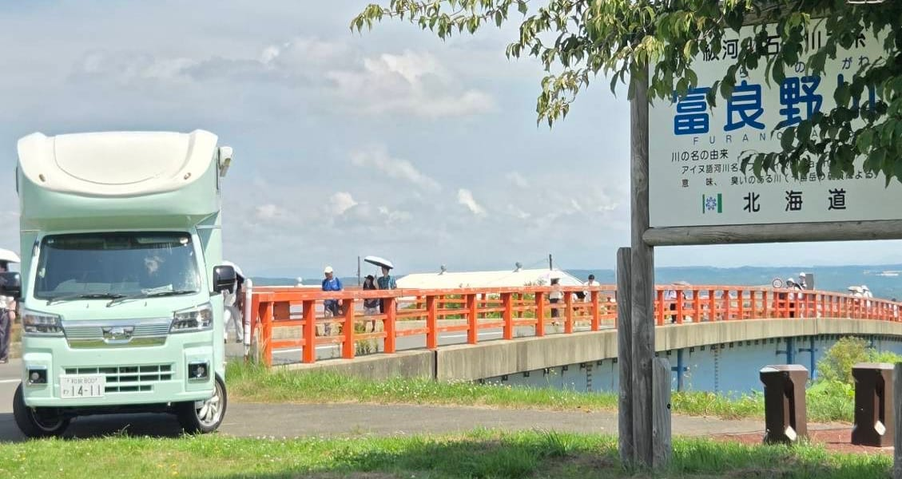
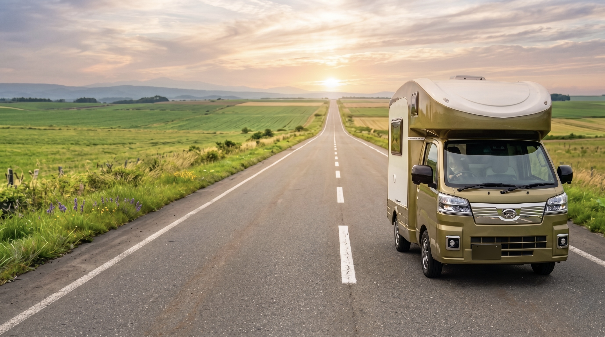
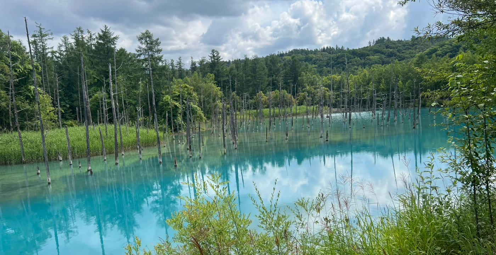
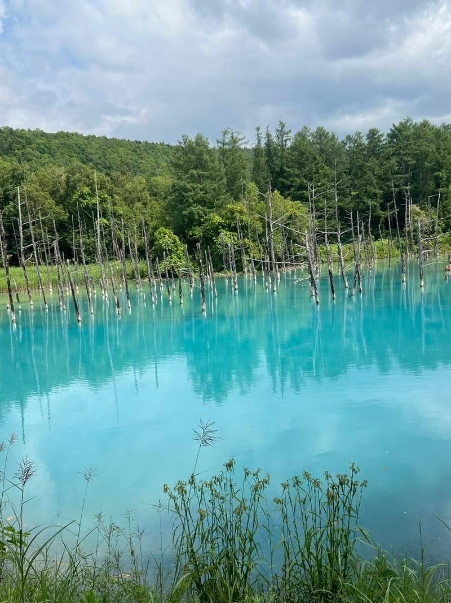
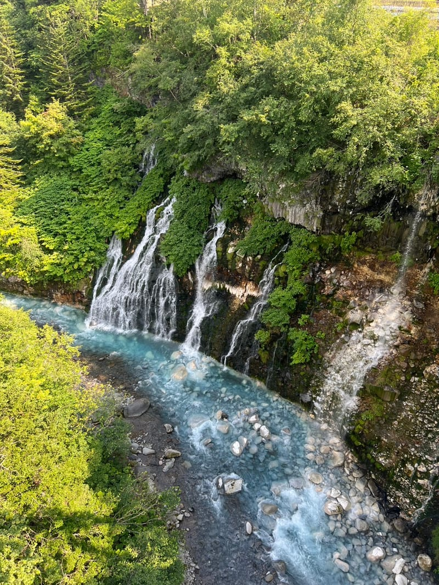
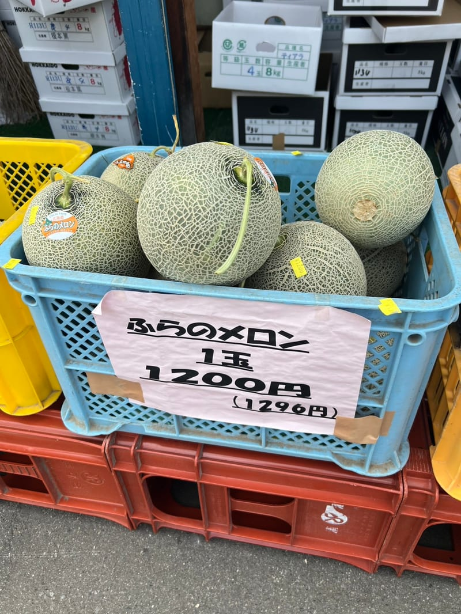

MODEL COURSE 01 ── FURANO / BIEI
ラベンダー畑と丘の絶景を ふたりだけの空間でゆっくりと
新千歳空港発着 ── カップル向けモデルコース

OVERVIEW
「北海道でラベンダーを見たい」「美瑛の丘を走ってみたい」──そんな二人の夢を、キャンピングカーなら宿泊費ゼロで叶えられます。ホテルの制約なく、行きたい場所で食事して、眠たくなったら車内でそのまま就寝。新千歳空港へのお届け（配車）で、空港からそのまま旅を始められます。
※このページの写真は、当店のHAPPY1で実際にこのコースを走った際に撮影したものです。
新千歳空港 → 旭川 → 美瑛
新千歳空港で車両受取 → そのまま出発
当店では新千歳空港へのお届けサービス（配車）を行っています。空港に到着したらそのままHAPPY1に乗り込んで旅スタート。店舗への移動は不要、時間ロスゼロで北海道旅が始まります。
💡 配車サービスは予約時にお申し付けください 返却時の新札幌駅へのお送りも対応しています旭川ラーメンでランチ
北海道三大ラーメン発祥の地・旭川でランチ。醤油ベースの濃厚スープが特徴。「蜂屋」「山頭火」など老舗が揃います。
💡 車内にキッチンがあるので スーパーで食材を買い込んで自炊もおすすめ美瑛「パッチワークの路」ドライブ
小麦・ジャガイモ・ビートなどが織りなすカラフルな丘が続くパッチワークロード。「ケンとメリーの木」「セブンスターの木」など定番スポットを巡ります。
「哲学の木」周辺で夕暮れ鑑賞
西に傾いた木と夕焼けのコントラストは絶景。カップルで訪れるのに最高のシーンです。
道の駅「びえい白金ビルケ」などで車中泊
美瑛エリアの道の駅はキャンピングカーが多く停まるスポット。静かな環境でゆっくり眠れます。夜は満天の星空が楽しめることも。
💡 夜は冷え込みますが 冷暖房完備のHAPPY1なら快適です道の駅「びえい白金ビルケ」は24時間トイレ完備で安心。近隣のRVパークを利用すれば電源・シャワーも使えます（目安：1,000〜3,000円）。

美瑛 → 富良野 → ファーム富田 → 十勝岳方面
美瑛「青い池」朝の散策
白金温泉近くの「青い池」は朝の光で幻想的なコバルトブルーに輝きます。観光客が少ない早朝がおすすめ。宿泊場所から10分以内で行けます。水面に立ち枯れたカラマツが並ぶ景色は、天気と光の角度で色の出方がまるで変わります。
💡 駐車場は有料 池の周囲は遊歩道で1周15分ほど白ひげの滝・ブルーリバー橋
青い池から車で約5分。崖のあちこちから地下水が湧き出してそのまま美瑛川へ落ちる「潜流瀑」で、青白い流れがそのまま下流の青い池へつながっています。ブルーリバー橋の上から見下ろせて、駐車場から歩いてすぐ。青い池とセットで回れる寄り道です。
💡 青い池・白ひげの滝・白金温泉は半径3km圏内 まとめて回れますファーム富田（富良野）
北海道を代表するラベンダー畑。7月上旬〜中旬が見頃のラベンダーをはじめ、ポピー・ひまわりなど色とりどりの花畑が広がります。ラベンダーソフトクリームも人気。
💡 入場無料 広大な花畑を二人でゆっくり散歩してみてください富良野チーズ工房 or 車内で自炊ランチ
富良野チーズ工房では製造見学と試食が楽しめます。または道の駅でジンギスカンセットを買って、景色の良い場所でBBQ風に楽しむのも◎
十勝岳望岳台ドライブ
標高930mの望岳台まで車で行けます。荒涼とした火山地形と緑の丘のコントラストが圧巻。晴れた日は富良野の街並みまで一望できます。
白金温泉で入浴
十勝岳の麓に湧く白金温泉は日帰り入浴可能な施設が複数あります。旅の疲れをゆっくり癒してください（目安：600〜1,000円）。
富良野エリアで車中泊
「道の駅 南ふらの」や「ふらのワイン工場」周辺が便利。夜は富良野ワインと地元食材で二人だけの夕食を。
「RVパーク富良野」は電源・シャワー完備で快適（予約推奨）。道の駅は無料で利用可能ですがマナーを守った駐車を。

富良野 → 札幌 → 店舗返却 → 新札幌駅送迎
富良野の朝霧ドライブ
早朝の富良野盆地は霧が立ち込め幻想的な景色に。ゆっくり目覚めてコーヒーを淹れながら過ごす朝もキャンピングカー旅の醍醐味です。
直売所で「ふらのメロン」を買って帰る
富良野を出る前に沿道の直売所へ。夏場は1玉1,200円ほどから並びます。買ってすぐ車内の冷蔵庫で冷やせるのはキャンピングカー旅ならでは。空港のおみやげ売り場より安く、食べ頃を選んで持ち帰れます。
💡 発送を受け付ける直売所も多数 割れが心配なら宅配便が安心札幌市内観光（時計台・大通公園など）
富良野から札幌まで約1時間40分。時計台・大通公園・すすきのを散策。ランチは札幌味噌ラーメンやスープカレーがおすすめ。
💡 札幌市内は駐車場が有料なので 郊外に停めて地下鉄を使うのが便利お土産購入
新千歳空港内のショップが最も充実。六花亭・白い恋人・ロイズなど北海道銘菓を時間をかけて選べます。
グリーンレンタカー北海道店に返却
車両の返却後、新札幌駅まで送迎いたします。地下鉄・JRへのアクセスも便利です。お気をつけてお帰りください。
PHOTOS
フリー素材ではなく、当店のHAPPY1でこのコースを走ったときのスナップです。「思っていたのと違った」をなくすために、そのままの色で載せています。



POINT
#道の駅なら無料#RVパーク2,000円〜
#観光バス到着前#ふたりだけの時間
#キッチン完備#地元食材
#車内冷蔵庫#ふらのメロン
#愛犬と北海道
#予定は自由自在
#ヒーター完備#雪景色の美瑛も絶景
BUDGET
| 費用項目 | 目安金額 | 備考 |
|---|---|---|
| レンタル料金（平日2泊） | ¥47,520 | 通常期平日 ¥23,760×2泊 |
| レンタル料金（土日含む2泊） | ¥52,272〜 | 土日祝 ¥28,512を含む場合 |
| ガソリン代 | 約¥8,000〜10,000 | 約380km・燃費8〜10km/L目安 |
| 宿泊費 | ¥0〜6,000 | 道の駅無料〜RVパーク利用 |
| 食費 | 約¥15,000〜20,000 | 外食＋自炊ミックスの場合 |
| 観光・温泉など | 約¥5,000〜8,000 | 入場料・日帰り温泉など |
| 合計目安（2名） | 約¥75,000〜100,000 | ホテル泊より大幅節約 |
FAQ
LET'S GO NORTH